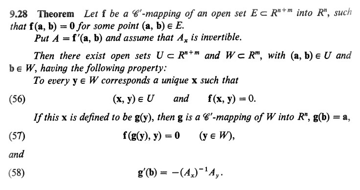
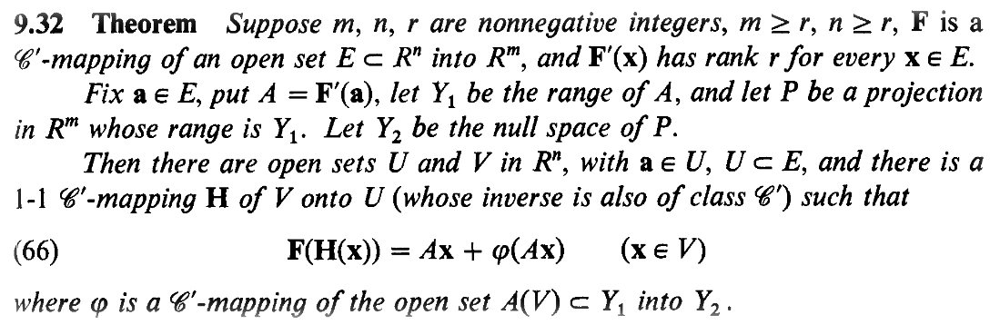
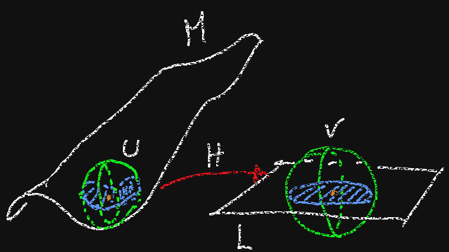
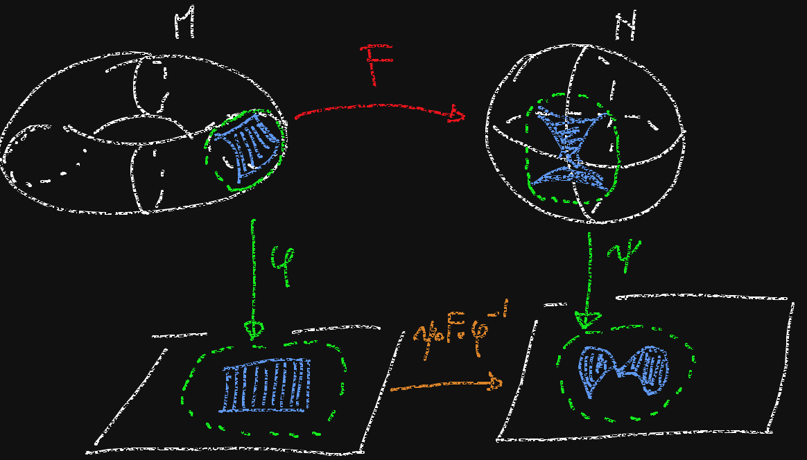

Bernhard Riemann, Habilitation Lecture, University of Gottingen, (1867)
(translated by W. Clifford)
§ 1. Magnitude-notions are only possible where there is an antecedent general notion which admits of different specialisations. According as there exists among these specialisations a continuous path from one to another or not, they form a continuous or discrete manifoldness; the individual specialisations are called in the first case points, in the second case elements, of the manifoldness. Notions...
The set of points for which some coordinates depend explicity on the others, via a given function.
The set of points whose coordinates satisfy a set of relations, given as equations.
In linear algebra, the equivalence between the parametric and the cartesian description of a subspace is algorithmically obtained by means of the Gaussian Elimination.
We may think of performing a nonlinear (smooth) Gaussian Elimination on the Jacobian matrix $DF$ (i.e. the matrix of first derivatives) of $F$.
Supposing that the last $k$ columns of $DF$ are linearly independent, we can express the associated variables in terms of the remaining ones. Thus we obtain a function $h:U\to\mathbb{R}^k$, with $U\subset\mathbb{R}^{n-k}$ such that locally the zero set of $F$ is the graph of $h$.
Implicit Function Theorem
A subset $M\subseteq\mathbb{R}^n$ is a (smooth) $k$-dimensional embedded submanifold of $\mathbb{R}^n$ if, for every $p\in M$, there exist an open neighborhood $U\subseteq\mathbb{R}^n$ and a smooth function $F:U\to\mathbb{R}^{n-k}$ such that $p\in U$ and $$U\cap M=\{x\in\ U\ :\ F(x)=0\}\qquad \mathrm{rk}DF_x=n-k\quad\forall\,x\in U\;.$$
Given $M\subset\mathbb{R}^n$ a $k$-dimensional manifold and $N\subset\mathbb{R}^m$ a $h$-dimensional manifold, a function $F:M\to N$ is $\mathcal{C}^r$ smooth if for every $p\in M$ there exist an open neighborhood $U$ of $p$ in $\mathbb{R}^n$ and a $\mathcal{C}^r$ smooth function $\tilde{F}:U\to\mathbb{R}^m$ such that $\tilde{F}(x)=F(x)$ for all $x\in M\cap U$.
A diffeomorphism is a bijective function $F:M\to N$ such that both $F$ and its inverse are smooth.
Note: A map $F:M\to N$ is smooth iff the above property holds with $U$ an open neighborhood of $M$ in $\mathbb{R}^n$.
A lesser known consequence of the inverse function theorem is the following.
Clearly $F(a)=0$ iff $AH^{-1}(a)+\phi(AH^{-1}(a))=0$ iff $AH^{-1}(a)=0$. So $$\{a\in U\ :\ F(a)=0\}=H(\ker A\cap V)\;.$$
$M\subseteq\mathbb{R}^n$ is a $k$-dimensional submanifold if and only if for every $p\in M$ we find two open sets $U,\ V\subseteq\mathbb{R}^n$, an affine $k$-dimensional subspace $L$ and a diffeomorphism $H:U\to V$ such that $p\in U$, $U\cap M$ is connected and $H(M\cap U)=L\cap V$.
If $M\subseteq\mathbb{R}^n$ is a $k$-dimensional submanifold, for every point $p\in M$ we can find an open neighborhood $U$ of $p$ in $\mathbb{R}^n$ such that $U\cap M$ is diffeomorphic to an open set of $\mathbb{R}^k$. Such a diffeomorphism is called coodinate chart of $M$ around $p$.
A function $F:M\to N$ is $\mathcal{C}^r$ smooth if and only if for any $p\in M$ and any coordinate charts $\phi:U_1\cap M\to V_1\subseteq\mathbb{R}^k$ of $M$ around $p$ and $\psi:U_2\cap N\to V_2\subseteq\mathbb{R}^h$ of $N$ around $F(p)$ such that $F(U_1\cap M)\subseteq U_2\cap N$, the map $\psi\circ F\circ \phi^{-1}$ is $\mathcal{C}^r$ smooth from $V_1$ to $V_2$.
